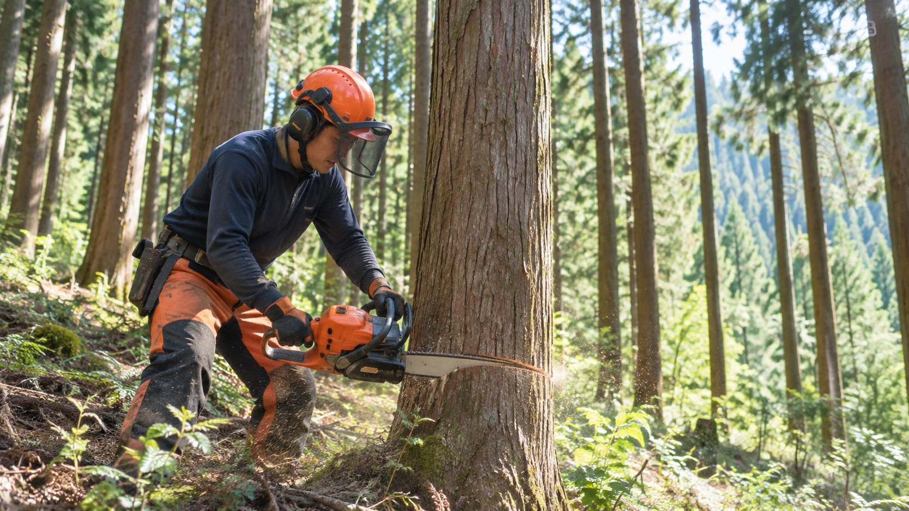
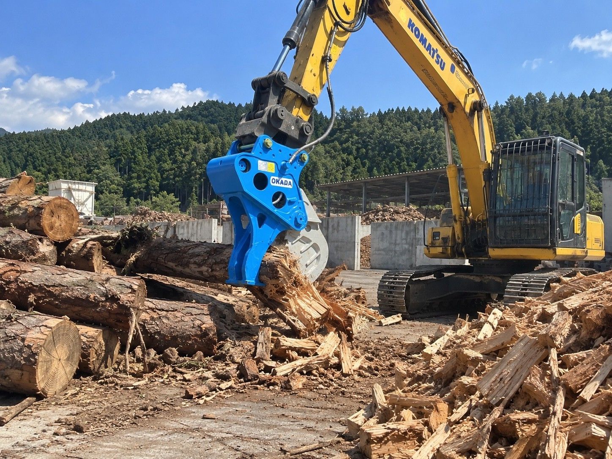
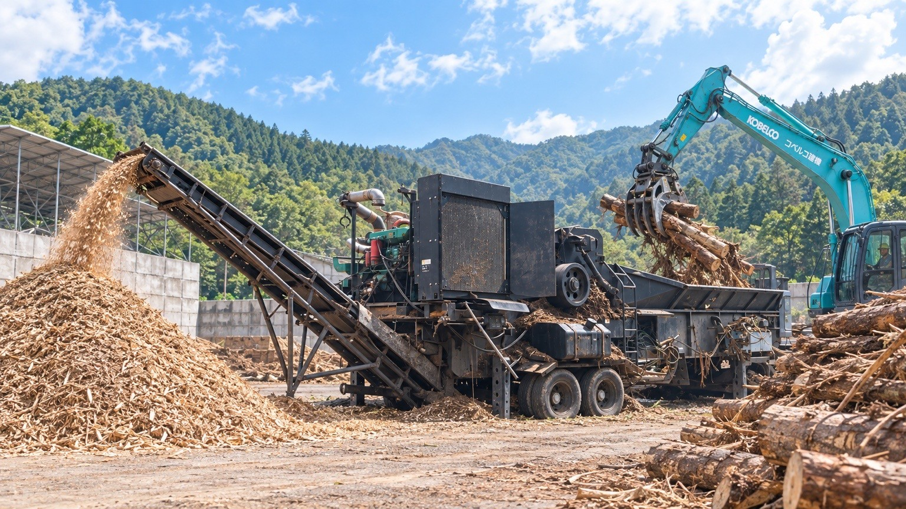

01FORESTRY
森林整備・伐採
山林の整備、立木の伐採、危険木・支障木への対応など、現場の状況を確認しながら森林を整えていく仕事です。
安全を最優先に、周囲の環境や地形に合わせた作業を行います。
 株式会社ClearthForest Resource Company
株式会社ClearthForest Resource Company
RECRUIT
森林と地域の未来を支える仕事に、一緒に取り組む仲間を募集しています。

WORK WITH US
林業、重機作業、木材リサイクル、木質チップ製造など、幅広い経験を積める環境です。
OUR WORK
Clearthでは、森林整備・伐採から、重機を使った木材の搬出・処理、木質チップ製造まで、森林資源を次の価値へつなぐ仕事に携わります。
一つの仕事だけではなく、現場で経験を積みながら、幅広い技術を身につけていける環境です。

山林の整備、立木の伐採、危険木・支障木への対応など、現場の状況を確認しながら森林を整えていく仕事です。
安全を最優先に、周囲の環境や地形に合わせた作業を行います。

林業用重機を使用し、伐採木の集材・整理・搬出や、木材の一次破砕などを行う仕事です。
現場ごとに異なる状況を判断しながら、経験を積んで重機操作の技術を身につけていきます。

受け入れた木材の整理・処理から、木質チップの製造、バイオマス燃料としての供給につなげる仕事です。
森林から生まれた木材を無駄にせず、次の資源・エネルギーへつなげます。
A DAY AT CLEARTH
現場によって仕事内容は異なりますが、仲間と声を掛け合いながら、安全を最優先に仕事を進めます。
森林整備や伐採、重機作業、木材リサイクルなど、その日の現場に合わせてチームで取り組みます。
その日の現場や作業内容を確認し、必要な道具・車両・安全装備を準備します。
チームで注意事項を共有し、安全に作業を始めるための準備を整えます。
現場へ移動し、地形や周辺環境、作業範囲を確認します。
その日の作業内容をチームで確認してから作業を開始します。
森林整備・伐採・集材・重機作業など、担当する現場に応じた作業を進めます。
周囲の状況を確認しながら、安全第一で作業を行います。
しっかり休憩を取り、午後の作業に備えます。
現場の状況に応じて、無理のない作業を心がけます。
午前中の作業を引き続き進めながら、伐採木の整理・搬出、木材処理など必要な作業を行います。
現場ごとに役割を分担し、チームで作業を進めます。
作業終了後は、道具や車両、現場周辺を確認・整理します。
帰社後は必要な片付けや翌日の準備を行い、1日の仕事を終えます。
※仕事内容・作業の流れは、現場や担当業務によって異なります。
WHY CLEARTH
森林整備・伐採から、重機作業、木材リサイクル、木質チップ製造まで。
Clearthでは、森林資源を次の価値へつなぐ幅広い仕事に携わることができます。
現場で経験を重ねながら、仲間とともに技術を身につけていく職場です。
GROW THROUGH EXPERIENCE
実際の現場で先輩と一緒に仕事をしながら、林業・伐採・木材処理などの技術を一つずつ身につけていきます。
現場ごとに状況が異なるからこそ、経験を積むほど判断力や技術力が高まります。
WIDE RANGE OF WORK
森林整備や伐採だけでなく、重機による集材・搬出、木材の一次破砕、木質チップ製造まで、Clearthの幅広い業務に関わることができます。
森林から資源へつながる流れを現場で学ぶことができます。
WORK AS A TEAM
林業や重機作業は、一人だけで完結する仕事ではありません。
周囲の状況を確認し、仲間と声を掛け合いながら、安全を最優先に仕事を進めます。
先輩の仕事を間近で見ながら、チームの中で成長していける環境です。
FROM FOREST TO FUTURE
伐採した木材を、一次破砕や木質チップ製造を通じて、次の資源・エネルギーへつなげます。
自分たちの仕事が、森林整備だけでなく、資源循環や地域の未来につながる仕事です。